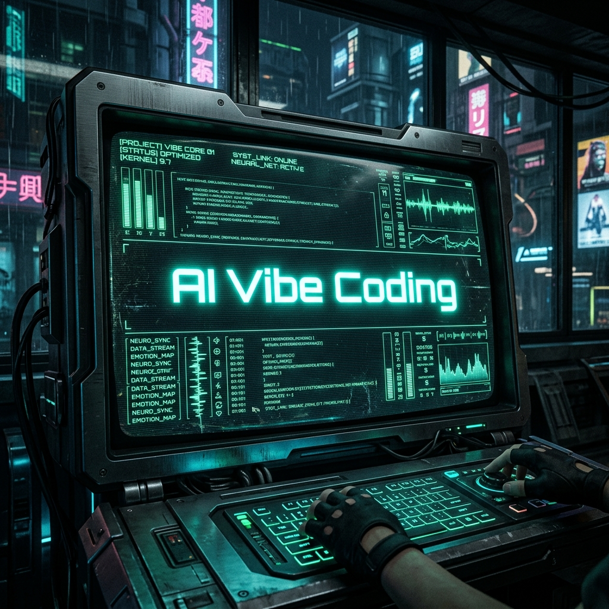
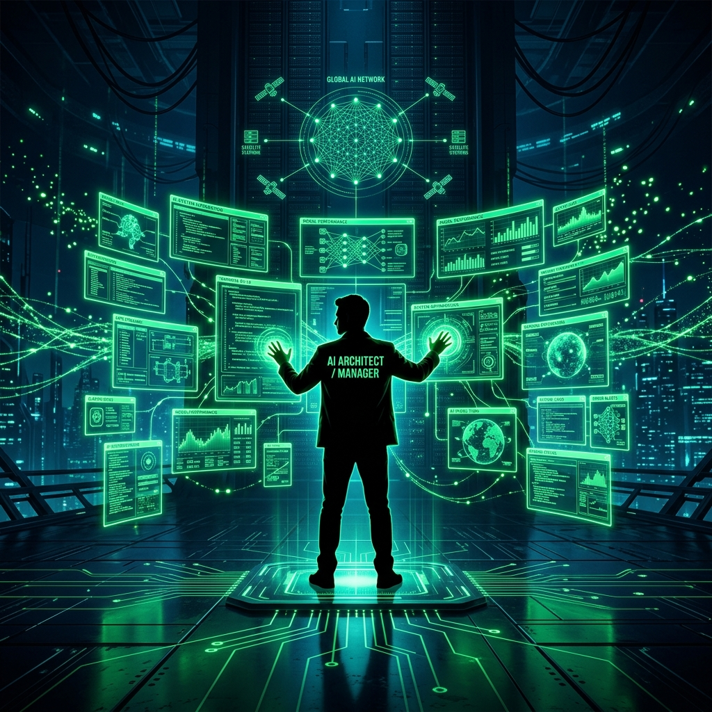

$ init --architect-mode

Presenter: AI Architect Group | 2026.04.07

직접 코딩하지 않고 요구사항과 설계서(프롬프트)로 AI를 지휘함.
토큰 사용량이 곧 생산성. 전략적인 소비로 결과물 최적화.
복수의 AI 에이전트를 동시 운용하는 설계자적 관리 역량.
Stage 1 (1~2주)
설계자 마인드셋 & 환경 구축
Stage 2 (3~4주)
설계 원칙 체득 & 풀스택 구축
Stage 3 (5~6주)
에이전트 매니징 심화 (병렬화)
Stage 4 (7~8주)
실전 배포 & 포트폴리오 완성
Gemini 3 Pro/Flash, Claude, GPT-4o
Antigravity, Stitch (Design)
Supabase, Pinecone (Vector DB)
LangChain, React/Next.js
Git/GitHub, Vercel
Architect Blueprint Visual
Task: 작업을 명확히 정의
Context: 배경 지식 제공
Reference: 예시와 가이드라인
Evaluate: 결과물 검증
Iterate: 설계서 개선 및 반복
"코드가 아닌 지시의 품질이 결과의 품질을 결정합니다."
Digital Construction Visual
매니저 뷰: 복수 에이전트 동시 지휘
Agent Alpha
Auth & Security
Agent Beta
Product Listing
Agent Gamma
Order Pipeline
"에이전트의 진행 상황을 모니터링하고 가이드의 충돌을 방지하는 것이 관리의 핵심입니다."
Launch & Deployment Visual
완성도 및 기획력
지속적인 학습 태도
TCREI 적용 정확도
GitHub 관리 및 README
Email: dandycode.kr@gmail.com
GitHub: github.com/postforty
$ exit --success